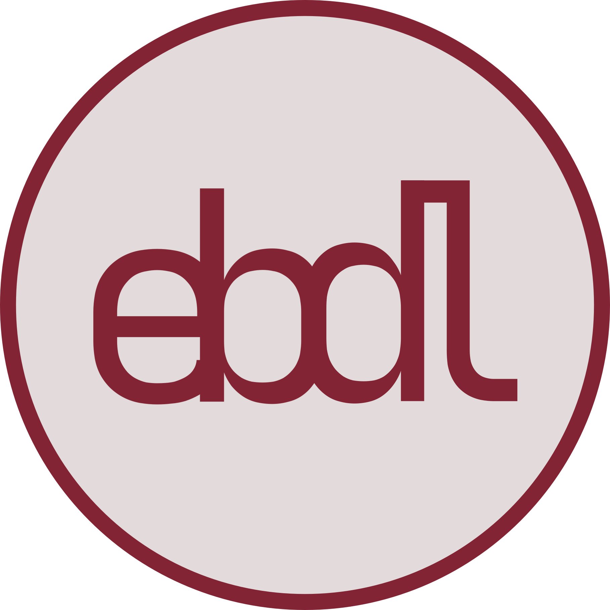

El Blog de Lázaro

¡Hola! Bienvenid@ a mi rincón en la red. He creado este espacio como mi propio cuaderno digital online, donde voy anotando lo que hago y cómo lo hago por si mi yo del futuro necesita una ayuda. Aquí encontrarás artículos sobre gnu/linux, redes, selfhosting, notas sueltas y enlaces a otras webs que me han parecido interesantes.
📄 Blog
⌚ Artículos Recientes
- 01 de septiembre de 2025 La Liga contra mi blog
- 18 de agosto de 2025 Por qué comparto públicamente las estadísticas del blog
- 04 de agosto de 2025 Top 10 temas para Hugo más descargados
- 21 de julio de 2025 Como compactar bases de datos PostgreSQL
- 07 de julio de 2025 Cómo quitar el disco de paridad en Unraid
- 23 de julio de 2025 La importancia de la netiqueta y el respeto en la creación de contenido
- 16 de junio de 2025 Mi experiencia al construir un servidor doméstico
- 14 de junio de 2025 Sin comentarios ni iteraciones en el blog (UGC)
👉 Ver todos los 📓artículos, o buscar artículos por 📎series, 🏷️etiquetas o 🔠categorías.
📔 Notas
Última 📔nota publicada: Recuperando el ritmo